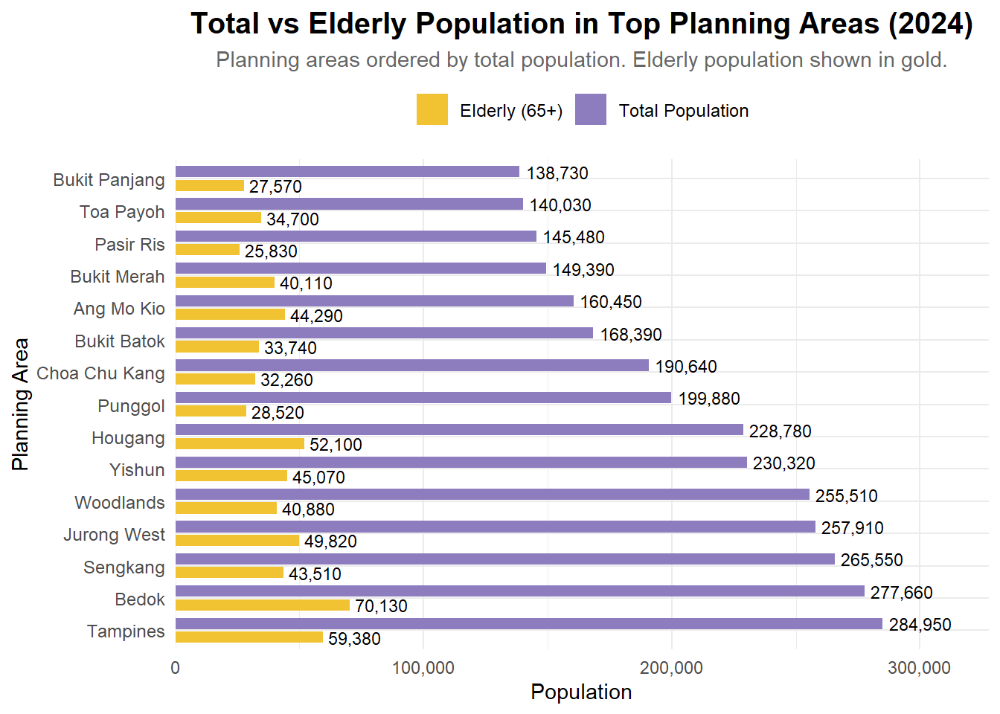

Code
pacman::p_load(tidyverse, haven,
ggrepel, ggthemes,
ggridges, ggdist,colorspace,ggdist,
patchwork, scales, ggplot2,
matrixStats, treemapify, showtext)Reviewing Classmates’ Data Visualization
May 10, 2025
May 11, 2025
Note: Please toggle between ‘Show’ and ‘Hide’ above based on your preference for viewing the R codes.
This is a review of a data visualization submitted by my classmate in ISSS608 - TA NGUYEN THAO NGUYEN. I will be stating the pros and cons of Cindy’s work, along with an improved version of her plot. This peer evaluation is helpful to improve our data analysis and visualization skills, and look out for details that were not visible to us.
Clear Comparison Between Groups: Using side-by-side bars for total vs. elderly population enables a quick visual comparison, making it easy to spot which planning areas have larger elderly proportions.
Effective Use of Color and Labels: The contrasting colors (gold and purple) and direct value labels on bars improve readability and help viewers interpret values without needing to refer to the axis constantly.
Insightful Focus: Highlighting elderly population (65+) alongside total population adds value by addressing demographic trends — a relevant and important lens for policy and planning.
Overlapping Bars and Misleading Lengths: Since both bars start from the same axis, the elderly population bar is visually “on top of” the total bar, but this could mislead viewers into thinking they are stacked or directly proportional. A grouped bar chart or dual-axis plot might reduce confusion.
Missing Percentage Context: Including the percentage of elderly population relative to the total for each planning area (e.g., as text labels or a separate line plot) would add deeper insight beyond raw counts.
Visual Hierarchy Could Be Improved: Right now, the gold bars stand out more than the purple bars, even though the purple ones represent the main variable (total population). Consider reversing this emphasis or softening the elderly bar color to reflect its subset nature.
Below is the improved version of the plot. The enhancements include:
pop_data <- read_csv("respopagesex2024.csv")
library(tidyverse)
library(scales)
library(forcats)
pop_data <- read_csv("respopagesex2024.csv")
# Summarise total and elderly population by PA
top_areas <- pop_data %>%
group_by(PA) %>%
summarise(
Total = sum(Pop),
Elderly = sum(Pop[Age >= 65]),
.groups = "drop"
) %>%
top_n(15, Total)
# Reshape into long format
plot_data <- top_areas %>%
pivot_longer(cols = c(Total, Elderly),
names_to = "Type",
values_to = "Population") %>%
mutate(
Type = recode(Type,
"Total" = "Total Population",
"Elderly" = "Elderly (65+)")
)
# Reorder PA by Total Population (largest on top)
plot_data <- plot_data %>%
left_join(top_areas %>% select(PA, Total), by = "PA") %>%
mutate(PA = fct_reorder(PA, Total, .desc = TRUE))
# Plot
ggplot(plot_data, aes(x = PA, y = Population, fill = Type)) +
geom_col(position = position_dodge(width = 0.85), width = 0.7) +
geom_text(aes(label = comma(Population)),
position = position_dodge(width = 0.85),
hjust = -0.1, size = 3) +
scale_y_continuous(labels = comma, expand = expansion(mult = c(0, 0.15))) +
scale_fill_manual(values = c("Total Population" = "#8E7DBE", "Elderly (65+)" = "#F1C232")) +
coord_flip() +
labs(
title = "Total vs Elderly Population in Top Planning Areas (2024)",
subtitle = "Planning areas ordered by total population. Elderly population shown in gold.",
x = "Planning Area",
y = "Population",
fill = NULL
) +
theme_minimal(base_family = "Helvetica") +
theme(
plot.title = element_text(face = "bold", size = 15, hjust = 0.5),
plot.subtitle = element_text(size = 11, hjust = 0.5, color = "gray40"),
axis.title = element_text(size = 11),
axis.text = element_text(size = 9),
legend.position = "top",
legend.text = element_text(size = 9)
)
---
title: "Take Home Exercise 1B"
subtitle: "Reviewing Classmates' Data Visualization"
format: html
date: 05/10/2025
date-format: long
date-modified: last-modified
editor: visual
execute:
eval: true
echo: true
warning: false
freeze: true
---
[*Note: Please toggle between 'Show' and 'Hide' above based on your preference for viewing the R codes.*]{.underline}
# 1.1 Setting the Scene
This is a review of a data visualization submitted by my classmate in ISSS608 - [**TA NGUYEN THAO NGUYEN**](https://isss608-cindy.netlify.app/take-home_exercise/take-home_ex01/take-home_ex01a). I will be stating the pros and cons of Cindy's work, along with an improved version of her plot. This peer evaluation is helpful to improve our data analysis and visualization skills, and look out for details that were not visible to us.
# 1.2 Evaluation
## 1.2.1 Three Good Design Principles
1. **Clear Comparison Between Groups:** Using side-by-side bars for total vs. elderly population enables a quick visual comparison, making it easy to spot which planning areas have larger elderly proportions.
2. **Effective Use of Color and Labels:** The contrasting colors (gold and purple) and direct value labels on bars improve readability and help viewers interpret values without needing to refer to the axis constantly.
3. **Insightful Focus:** Highlighting elderly population (65+) alongside total population adds value by addressing demographic trends — a relevant and important lens for policy and planning.
## 1.2.2 Three Areas for Further Improvement
1. **Overlapping Bars and Misleading Lengths:** Since both bars start from the same axis, the elderly population bar is visually "on top of" the total bar, but this could mislead viewers into thinking they are stacked or directly proportional. A grouped bar chart or dual-axis plot might reduce confusion.
2. **Missing Percentage Context:** Including the percentage of elderly population relative to the total for each planning area (e.g., as text labels or a separate line plot) would add deeper insight beyond raw counts.
3. **Visual Hierarchy Could Be Improved:** Right now, the gold bars stand out more than the purple bars, even though the purple ones represent the main variable (total population). Consider reversing this emphasis or softening the elderly bar color to reflect its subset nature.
# 1.3.3 Enhancements
Below is the improved version of the plot. The enhancements include:
- A reversed bar order, with the largest on top for easier scanning.
<!-- -->
- Bolded key text for title, axis and labels.
<!-- -->
- Fine-tuned label positions to prevent overlap and improve balance.
<!-- -->
- Cleaned up legend and theme for a polished look.
```{r}
pacman::p_load(tidyverse, haven,
ggrepel, ggthemes,
ggridges, ggdist,colorspace,ggdist,
patchwork, scales, ggplot2,
matrixStats, treemapify, showtext)
```
```{r}
pop_data <- read_csv("respopagesex2024.csv")
library(tidyverse)
library(scales)
library(forcats)
pop_data <- read_csv("respopagesex2024.csv")
# Summarise total and elderly population by PA
top_areas <- pop_data %>%
group_by(PA) %>%
summarise(
Total = sum(Pop),
Elderly = sum(Pop[Age >= 65]),
.groups = "drop"
) %>%
top_n(15, Total)
# Reshape into long format
plot_data <- top_areas %>%
pivot_longer(cols = c(Total, Elderly),
names_to = "Type",
values_to = "Population") %>%
mutate(
Type = recode(Type,
"Total" = "Total Population",
"Elderly" = "Elderly (65+)")
)
# Reorder PA by Total Population (largest on top)
plot_data <- plot_data %>%
left_join(top_areas %>% select(PA, Total), by = "PA") %>%
mutate(PA = fct_reorder(PA, Total, .desc = TRUE))
# Plot
ggplot(plot_data, aes(x = PA, y = Population, fill = Type)) +
geom_col(position = position_dodge(width = 0.85), width = 0.7) +
geom_text(aes(label = comma(Population)),
position = position_dodge(width = 0.85),
hjust = -0.1, size = 3) +
scale_y_continuous(labels = comma, expand = expansion(mult = c(0, 0.15))) +
scale_fill_manual(values = c("Total Population" = "#8E7DBE", "Elderly (65+)" = "#F1C232")) +
coord_flip() +
labs(
title = "Total vs Elderly Population in Top Planning Areas (2024)",
subtitle = "Planning areas ordered by total population. Elderly population shown in gold.",
x = "Planning Area",
y = "Population",
fill = NULL
) +
theme_minimal(base_family = "Helvetica") +
theme(
plot.title = element_text(face = "bold", size = 15, hjust = 0.5),
plot.subtitle = element_text(size = 11, hjust = 0.5, color = "gray40"),
axis.title = element_text(size = 11),
axis.text = element_text(size = 9),
legend.position = "top",
legend.text = element_text(size = 9)
)
```